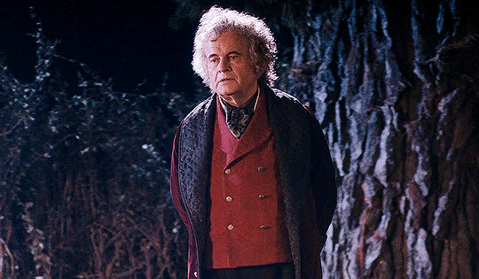
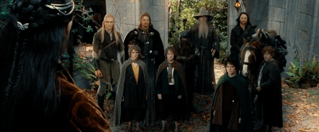
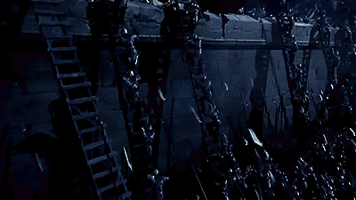
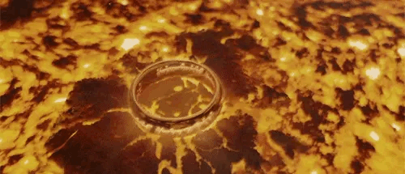

Cumpleaños de Bilbo
Descripción
Ocurre al inicio de "La Comunidad del Anillo". Bilbo celebra su 111 cumpleaños en la Comarca, donde organiza una fiesta épica antes de desaparecer misteriosamente con el Anillo Único.
Creación de la Comunidad del Anillo
Descripción
En "La Comunidad del Anillo", representantes de varias razas se reúnen en Rivendel para formar la Comunidad, cuyo objetivo es destruir el Anillo Único y derrotar a Sauron.
Travesía por las Minas de Moria

Descripción
En "La Comunidad del Anillo", la Comunidad atraviesa las oscuras y peligrosas Minas de Moria, donde enfrentan a orcos y el temible Balrog.
Batalla del Abismo de Helm
Descripción
En "Las Dos Torres", en el Abismo de Helm, las fuerzas de Rohan defienden su fortaleza contra un ejército de orcos y Uruk-hai enviados por Saruman.
Batalla de los Campos de Pelennor

Descripción
En "El Retorno del Rey", las fuerzas de Gondor luchan en la épica Batalla de los Campos de Pelennor, donde los hombres se enfrentan a los ejércitos de Sauron, mientras el Rey Théoden y Aragorn juegan papeles cruciales.
Destrucción del Anillo Único en el Monte del Destino
Descripción
En "El Retorno del Rey", Frodo, con la ayuda de Sam, finalmente destruye el Anillo Único en el Monte del Destino, poniendo fin al dominio de Sauron sobre la Tierra Media.